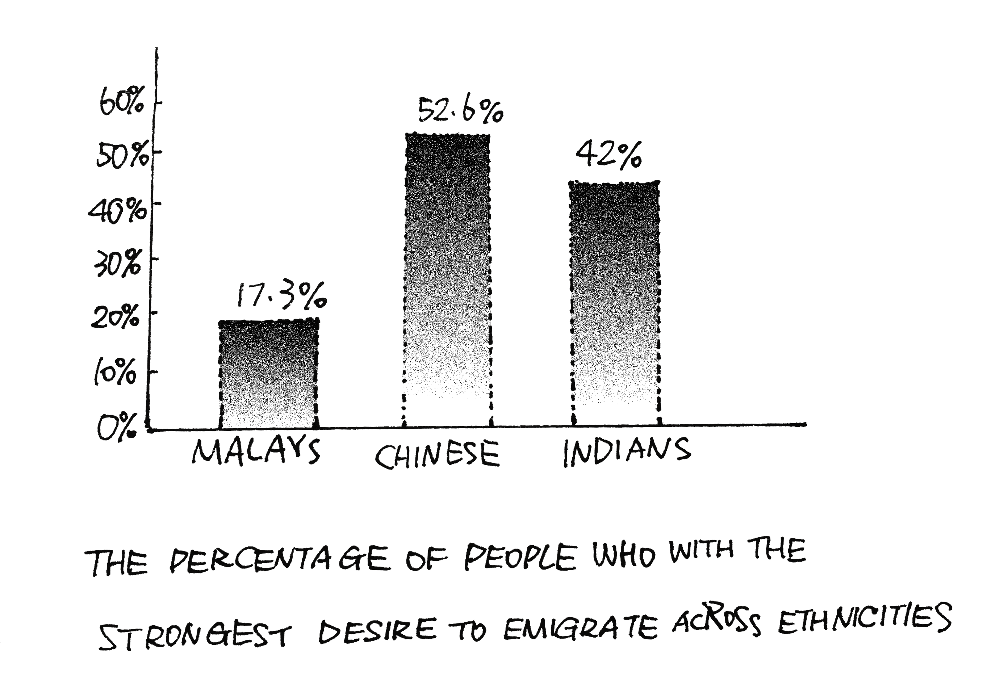
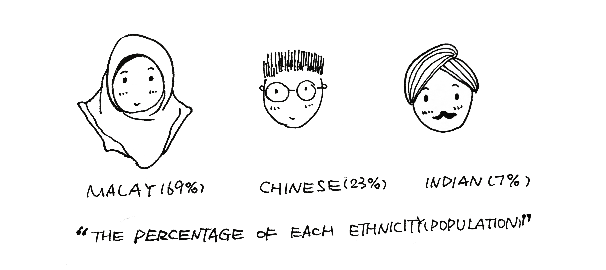
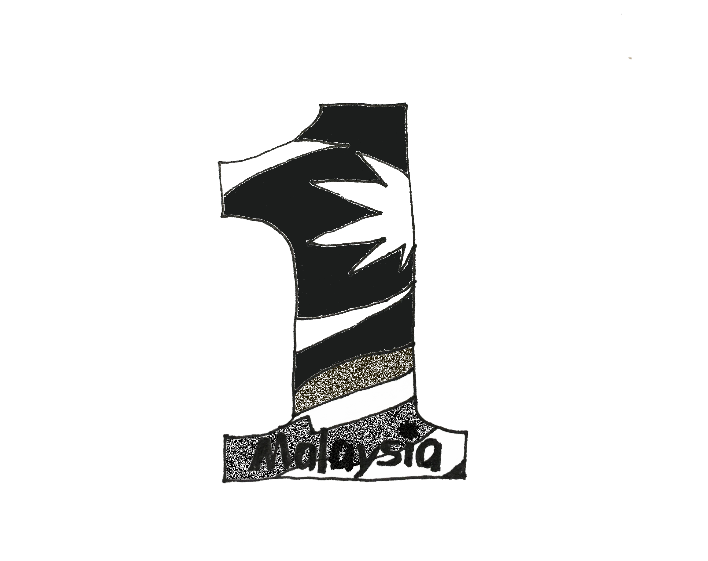

Why Malaysian Chinese are Leaving?
Interesting phenomenon?
Malaysia is known for its beaches, rainforests and mix of Malay, Chinese, Indian and European cultural influences. The researchers from Oxford University found that across ethnicities, the Malaysians with the strongest desire to emigrate we re those who had at least completed secondary education – 17.3 per cent for Malays, 52.6 per cent for Chinese and 42 per cent for Indians.
From 2006 to 2016, 56,576 people announced the abandonment of Malaysian nationality. (49,864 of them were Chinese)
UNIQUE CULTURE DIVERSITY?
Malaysia has a multi-ethnic, multicultural, and multilingual society. It consists of 3 major ethnicities, Malay(69%), Chinese(23%) and Indian(7%). They have different religious beliefs, they celebrate different festivals and speak their own dialects.
WHAT IS ONE MALAYSIA?
To promote ethnic harmony, national unity and efficient government, in 2009, the 6th prime minister, Najib Tun Razak launched a programme “One Malaysia”.
However, do the laws allow them to be “one”? Otherwise, why Malaysian Chinese are leaving?
